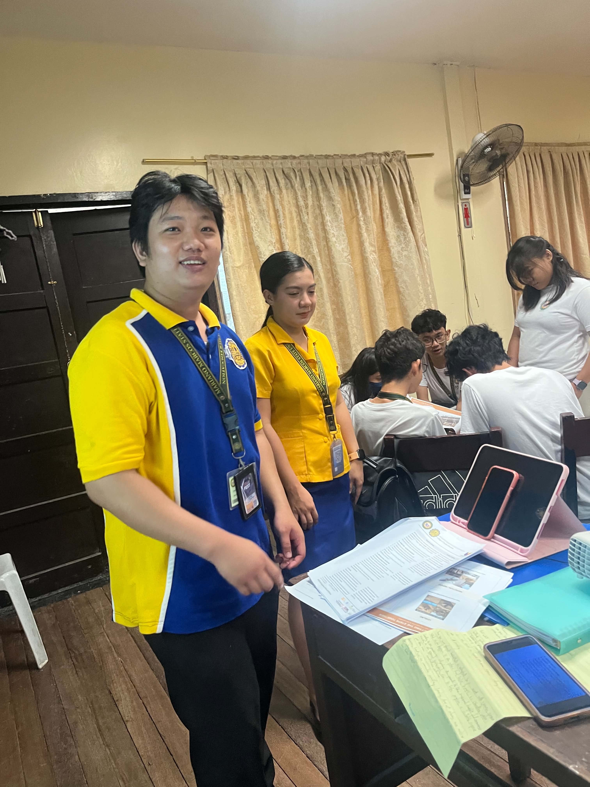
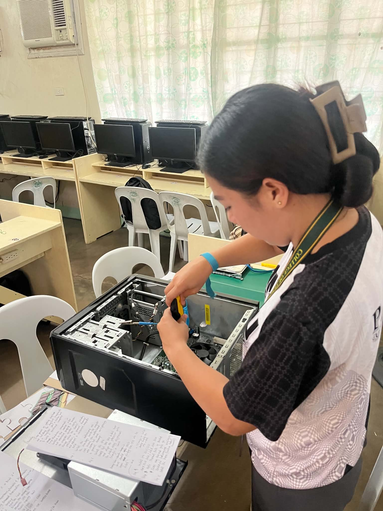
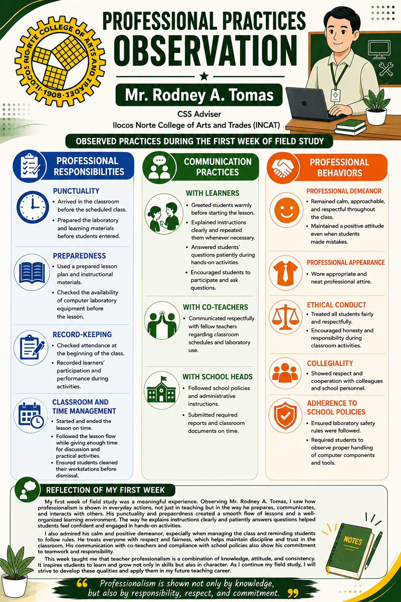

OFF-CAMPUS FIELD STUDY
Ilocos Norte College of Arts and Trades
Observed and assisted classroom activities, supported practical computer work, and participated in teaching demonstrations and learner assessments.
View INCAT files ↗FIELD STUDY 1 & 2 2026
Hello, I'm Angel Marcelo Vidad. This portfolio gathers my classroom experiences, teaching materials, and reflections as a future educator.

01 / ABOUT ME
I am a Bachelor of Technical-Vocational Teacher Education student majoring in Computer Hardware Servicing at Mariano Marcos State University, College of Teacher Education.
My Field Study experiences at Ilocos Norte College of Arts and Trades and MMSU Laboratory High School allowed me to observe classroom routines, support learners, prepare teaching materials, and reflect on the responsibilities of a teacher.
View my curriculum vitae ↗02 / EXPERIENCE
Two schools, different classroom experiences, and valuable lessons.
OFF-CAMPUS FIELD STUDY
Observed and assisted classroom activities, supported practical computer work, and participated in teaching demonstrations and learner assessments.
View INCAT files ↗
IN-CAMPUS FIELD STUDY
Observed classroom procedures, explored assessment practices, developed lesson materials, and prepared instruction for construction site preparation.
View LHS files ↗03 / TEACHING WORK
Some original outputs and lesson plans from my Field Study collection.


04 / PHOTO GALLERY
Original photographs from my Field Study experiences.
05 / DOCUMENTS
Weekly journals, activities, lesson plans, and original Field Study files.
No documents match this search.
THANK YOU FOR VISITING
Each classroom experience has helped me become a more thoughtful, prepared, and reflective future educator.